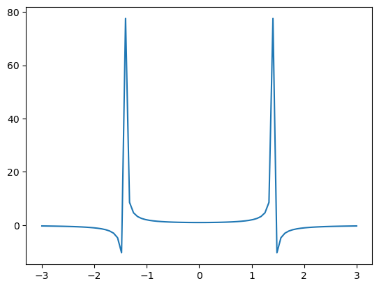

import numpy as np
import matplotlib.pyplot as plt
x = np.linspace(-3, 3, 80)
y =(1-x**2/2)**-1
plt.plot(x, y)
plt.show()
JHM
January 3, 2024
What are Hamilton’s equations? In a sense the equations are a trivial formalization of Newton’s equations. But when applied to Weber’s force law, the Hamilton equations provide a useful formalism.
We let \(x,v\) be position and velocity state variables. Let \(J\) be the standard almost-complex structure, i.e. \(J=\begin{pmatrix} 0 & 1 \\ -1 & 0 \end{pmatrix}\) with \(J^2 = -Id\).
The classical Gibbs-Liouville theorem [ref] says that the canonical volume form \(dx dv\) on state space is invariant with respect to Hamiltonian evolution. In otherwords, for a given rectange \(dx dv\) of initial conditions in statespace, the forward time evolution of the Hamiltonian system with these given initial conditions occupies a region in \(xv\)-spave having the same volume with respect to \(dx dv\).
For classical Hamilton equations, this follows from the vector field \(J \cdot \nabla H\) being divergence free: \[div(J \nabla H)=0.\] If we integrate the Hamilton equations, then we obtain \[\frac{d}{dt}(x,v)=(\dot{x}, \dot{v})= \begin{pmatrix} \partial H / \partial v \\ - \partial H/\partial x \end{pmatrix},\] and the point is that this field has zero divergence.
For example, if the \(H = \omega (x^2 + v^2)\) is the Hamiltonian for a one-particle oscillator, then the energy levels are circles, and the Hamilton evolution is like a rigid rotation. Therefore it’s evident that the area form \(dx dv\) is invariant with respect to time evolution.
[Another example?]
Our interpretation of the time evolution being volume invariant means the overall “uncertainty” in the state is constant with respect to time. In other words if we know position \(x\) with some error \(dx\) and velocity \(v\) with error \(dv\), then the overall uncertainty of the system remains \(dx dv\) square-error throughout the evolution. This is relatively good, for example if the particles are spatially closeby (so \(dx\) is small), then we are certain that \(dv\) is large (i.e. they have large relative motion). Likewise if the particles have very small relative motion (\(dv\) small) then the particles have large relative position (\(dx\) large).
The existence of an invariant background measure \(dx dv\) on state space is necessary to define the entropy of states \(\rho\), where entropy is defined relative to this background mesaure. However our researches into Weber electrodynamics has led us to review the basic Gibbs Liouville measure. We find the usual Gibbs-Liouville volume form \(dx dv\) is not invariant when the state space evolves according to Weber’s Hamiltonian. Our goal in this article is to derive the proper Weberian invariant measure on state space.
The Hamiltonian for a reduced two-body problem can be rewritten in variables \((x,v)\) where \(x>0\) and Weber’s Hamiltonian is \[H = \frac{1}{2} \mu v^2 + \frac{\alpha}{x}(1-\frac{v^2}{2c^2}), \] with \(\alpha:=q_1 q_2\) and \(\mu:=\frac{m_1 m_2}{m_1+m_2}\) is the reduced inertial mass of the system. We restrict \(x>0\) because \(x\) represents the relative distance \(x=r\) between the two particles. It is convenient to set \[\mu_{\text{eff}}:=\mu-\frac{\alpha}{c^2x}.\]
Hamilton’s equations become \[ \frac{d}{dt}(x,v)=(x',v')= \mu_{\text{eff}}^{-1}\cdot~~ J \nabla H.\]
What is the divergence of this vector field? First we apply product rule and find \[div(\mu_{\text{eff}}^{-1}.J\nabla H) = \nabla \mu_{\text{eff}}^{-1}~ \cdot J \nabla H\] since \(div(J \nabla H)=0\). Therefore the divergence of the Hamilton flow is the dot product of \(\nabla \mu_{\text{eff}}^{-1}\) with \(J \nabla H\).
The gradient of \(\mu_{\text{eff}}^{-1}\) is directly computed as \[\nabla \mu_{\text{eff}}^{-1} = \begin{pmatrix} -{\mu_{\text{eff}}}^{-2} . \frac{\alpha}{c^2 x^2} \\ 0 \end{pmatrix}.\]
Defining \(\beta = \frac{\mu c^2}{\alpha}\) the divergence of the vector field then becomes \[div = \frac{v}{x}~ \frac{1}{1-\beta x}.\]
We make some remarks on this computation. The noninvariance of the volume \(dxdv\) means that Gibbs entropy of the system cannot be defined relative to \(dxdv\). Rather we need an invariant reference measure on the state space. In the following section we derive densities \(\rho = f dx dv\) on the state spacee invariant with respect to the Hamilton Weber evolution.
Formally the divergence of \(X\) is the Lie derivative \(L_X(vol)\) of the volume form. Here we look for a function \(f\) such that the measure \(\rho=f dxdv\) is invariant with respect to Weber Hamilton flow. This means finding \(\rho=f.vol\) such that \(L_X(f.vol)=0\) is identically zero. We proceed using Cartan’s formula \[L_X = \iota_X d + d \iota_X\] and find \[L_X (f.vol) = d(f \iota_X vol) =0.\]
In coordinates if \(X=X_1 \partial_x + X_2 \partial_v\), then \[\iota_X vol = \iota_X dxdv = X_1 dv - X_2 dx.\] Therefore \(L_X (f.dxdv)=d(f X_1 dv - f X_2 dx)\) and our basic equation becomes \[ f\cdot (X_{1,x}+ X_{2,v}) + f_{,x}~ X_1 + f_{,v} ~X_2=0. \]
Everything is computed explicitly using Hamilton’s equations.
Substituting we find the basic equation now becomes \[f~(\mu_{\text{eff}}^{-1}~ \frac{\alpha}{c^2}~\frac{v}{x^2})+ f_{,x}~ v+ f_{,v} ~\mu_{\text{eff}}^{-1} ~\frac{\alpha}{x^2}~ (1-\frac{v^2}{2 c^2})=0.\]
Without further assumptions, we see every function \(f\) satisfying this ODE defines an invariant measure on state space.
At this stage enters some arbitrary choices, for example whether the distribution \(f\) satisfies either \(f_{, x}=0\) or \(f_{, v}=0\) identically.
Suppose that \(f_{,x}=0\) identically. Then the basic equation becomes \[d_v \log f = -\log (1-\frac{v^2}{2c^2}).\] Therefore we find \(f= (1-\frac{v^2}{2c^2})^{-1}\) is an invariant density which is position independant.
We assume that \(f_{,v}=0\) identically. Then the basic equation simplifies to \[ (f~\mu_{\text{eff}}^{-1}~\frac{\alpha}{c^2x^2}+f_{,x}) v =0.\] But the left hand side vanishes iff \[f~\mu_{\text{eff}}^{-1}~\frac{\alpha}{c^2x^2}+f_{,x}=0,\] which rearranges into the logarithmic derivative \[d_x \log f = \frac{f_{,x}}{f} = -\mu_{\text{eff}}^{-1}~\frac{\alpha}{c^2 x^2}.\] The definition of \(\mu_{\text{eff}}=\mu-\frac{\alpha}{c^2 x}\) implies \[d_x \log f = \frac{1}{x} + \frac{\beta}{1-\beta x}\] where \(\beta:=\mu c^2 /\alpha\).
Taking antiderivatives we find \[\log f = \log x - \log (1-\beta x) + C =\log \frac{x}{1-\beta x}+C\] where \(C\) is a constant of integration.
If we assume initial conditions \(f(1,v)=1\) independantly of \(v\), then \(C=\log(1-\beta)\). Therefore \(f = (1-\beta) \frac{x}{1-\beta x}\) is the unique solution of the basic equation such that \(f_{,v}=0\) identically and \(f(1)=1\).
Therefore we obtain:
We should emphasize that this derivation is somewhat specific to \(xv\) being strictly a two-dimensional state space. For applications we are of course interested in \(N\)-body electrodynamic systems, and this will be discussed in sequel.
So we derive the invariant measure! This allows us to define the entropy of measures relative to \(\rho dxdv\). From here we can begin to study a Weberian approach to the Second “Law” of Thermodynamics.
[ To be continued – JHM]